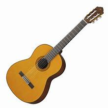

관심분야
- 코딩
- C 언어
- 파이썬
- 자바
- HTML
- 생성형 AI (Generative AI)
- 소설형 인공지능
- 대화형 인공지능
- 인공지능 검색 엔진
- 이미지 인공지능
- 양자컴퓨터
- 큐비트
- 양자 얽힘
- 중첩
- 텔레포테이션
안녕하세요. 저는 올해 입학한 25학번 김성래입니다.
저는 기타연주와 게임을 취미로 하고있습니다.
|  |  |
|
|---|---|---|
| 기타연주 | 게임 | 운전 |
| 구분 | 월 | 화 | 수 | 목 | 금 |
|---|---|---|---|---|---|
| 09 | |||||
| 10 | 프로그래밍언어실습I (102/공603) | 컴퓨터과학개론 (102/공507) | |||
| 11 | |||||
| 12 | |||||
| 13 | SW개발문제해결능력 (102/공609) | ||||
| 14 | 컴퓨팅사고력 (102/공608) |
인터넷콘텐츠 (102/공615) | |||
| 15 | |||||
| 16 | 생활영어 (온라인) | ||||
| 17 | |||||
| 18 | 컴퓨터활용능력 (온라인) | ||||
| 19 | 문화콘텐츠와역량 (온라인) | 정보능력 (온라인) |
|||
| 20 | |||||
| 21 | 성경과삶 (온라인) | ||||
| 22 |